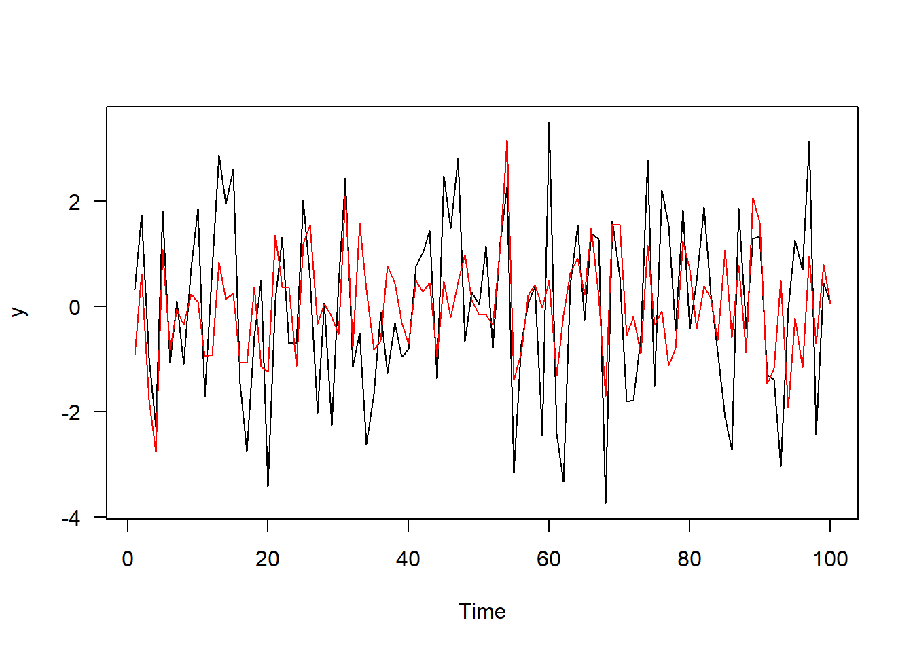
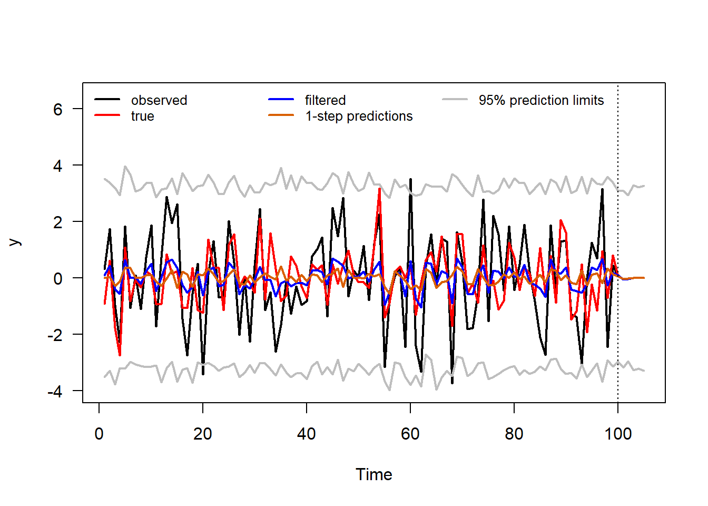
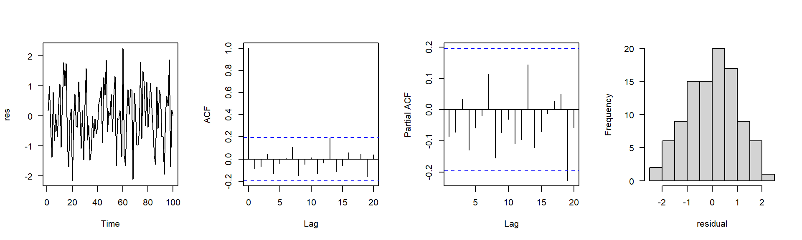
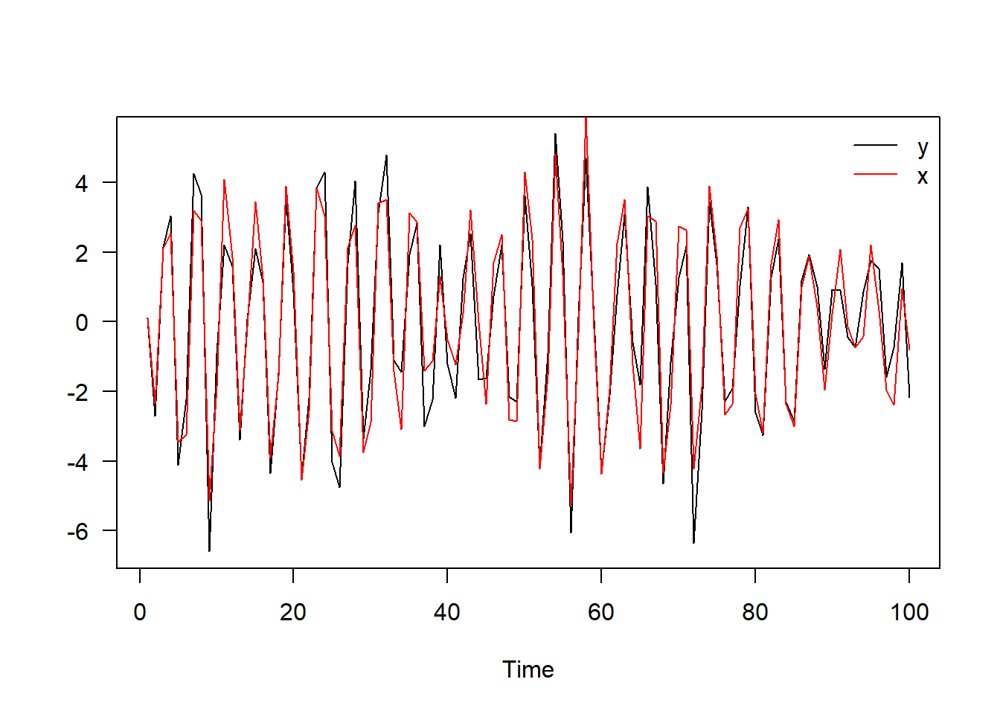
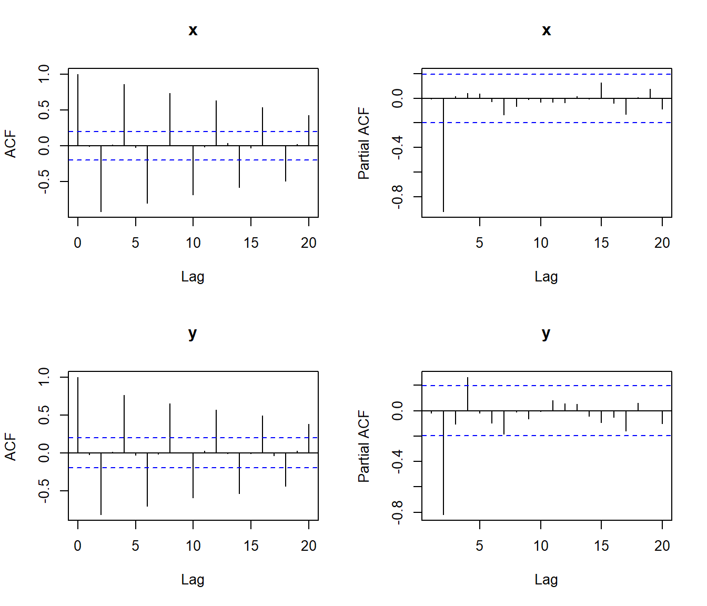
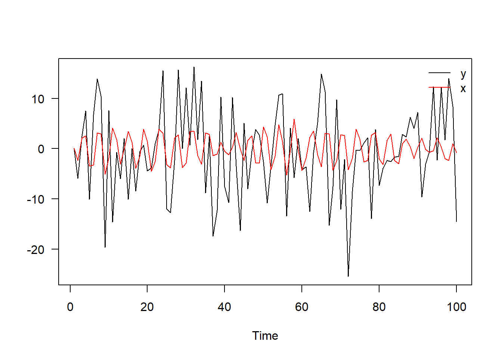
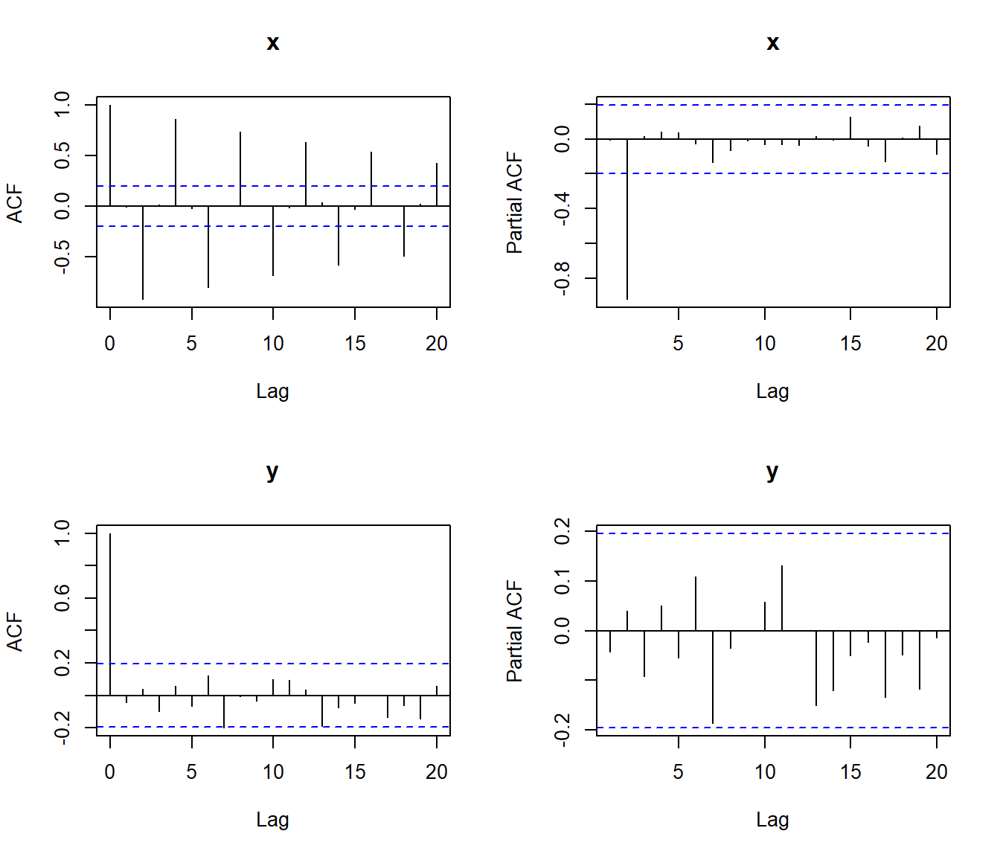
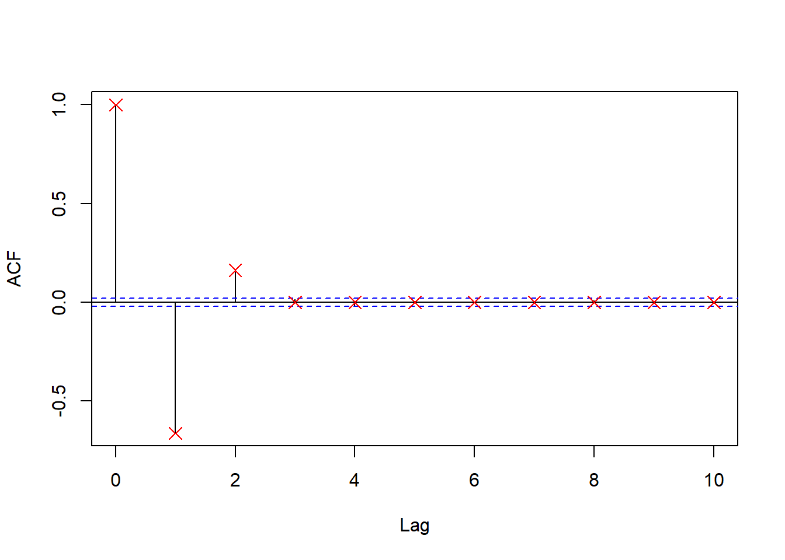
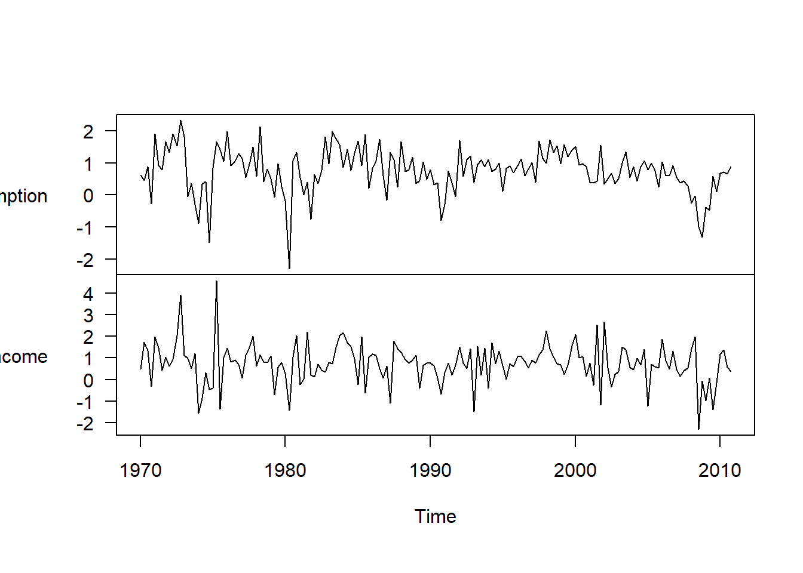
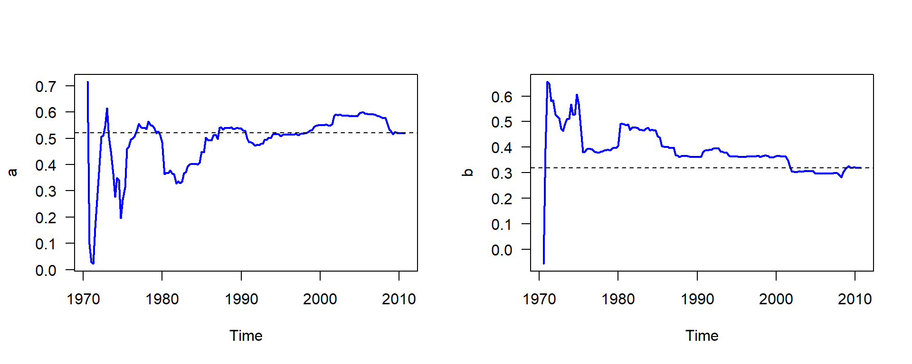

Code
library(dlm)
library(fpp)
library(knitr)
# Colours and helper used in the text
cols <- c("#1b9e77", "#d95f02", "#7570b3")
f2 <- function(x, d = 2) formatC(x, format = "f", digits = d)Section 2: Exponential smoothing, state-space and hidden Markov models
Topics covered: Writing models in state-space form, the Kalman filter written from first principles, the likelihood from the prediction error decomposition, missing observations and forecasting, regression as a state-space model, and the second differences of the linear growth model.
Data: data simulated from the models in Questions 1–3, and usconsumption (quarterly % changes in US personal consumption and personal disposable income, 1970–2010) from the fpp package (Question 4). Packages: dlm, fpp, knitr.
A state-space model has two equations: a state equation for the hidden state, and an observation equation for what we actually see.
\[ Y_t = F\theta_t + v_t, \quad v_t \sim N(0, V), \qquad \theta_t = G\theta_{t-1} + w_t, \quad w_t \sim N(0, W) \]
Lots of familiar models fit this form. An AR(2) is written by putting \((x_t, x_{t-1})\) into the state vector, as in the notes. The linear growth model has a local level \(\mu_t\) and a local trend \(\beta_t\) that both change over time. It doesn’t need to be stationary, but its second differences are.
The Kalman filter runs two steps at every time point. It predicts the state, \(\theta_t \mid y_{1:t-1} \sim N(a_t, R_t)\), and the next observation, \(y_t \mid y_{1:t-1} \sim N(f_t, Q_t)\). Then, once \(y_t\) comes in, it updates to the filtered state \(\theta_t \mid y_{1:t} \sim N(m_t, C_t)\):
\[ a_t = G_t m_{t-1}, \quad R_t = G_t C_{t-1} G_t' + W, \qquad f_t = F_t a_t, \quad Q_t = F_t R_t F_t' + V \]
\[ m_t = a_t + K_t e_t, \quad C_t = R_t - K_t F_t R_t, \qquad K_t = R_t F_t' Q_t^{-1}, \quad e_t = y_t - f_t \]
The one-step predictions \(f_t\) are the fitted values, and the \(m_t\) are the filtered values. If \(y_t\) is missing, the gain is \(K_t = 0\), so \(m_t = a_t\) and \(C_t = R_t\). Forecasting works the same way, by adding NAs to the end of \(y\). The prediction errors also give the log-likelihood, which is what we maximise to estimate \(V\) and \(W\):
\[ \ell(\phi) = -\frac{1}{2}\sum_{t=1}^n \log|Q_t| - \frac{1}{2}\sum_{t=1}^n (y_t - f_t)' Q_t^{-1} (y_t - f_t) \]
I used the simulation loop from the notes, but with \(\theta_0 \sim N(0, 1)\) and the time-varying \(F_t\) and \(G_t\). I simulated 105 values so that I’d have \(F_t\) for the 5 forecast steps, and the true \(y_{101}, \dots, y_{105}\) to compare against.
[1] TRUEFF <- round(rnorm(N, mean = 1, sd = 0.2), 1)
theta <- numeric(N)
y <- numeric(N)
theta0 <- rnorm(1, 0, 1)
theta[1] <- rnorm(1, GG[1] * theta0, sqrt(W))
y[1] <- rnorm(1, FF[1] * theta[1], sqrt(V))
for (i in 2:N) {
theta[i] <- rnorm(1, GG[i] * theta[i-1], sqrt(W))
y[i] <- rnorm(1, FF[i] * theta[i], sqrt(V))
}
y.true <- y[101:105] # kept back to check the forecasts
theta <- theta[1:100]
y <- y[1:100]
\(G_t\) flips between \(-0.5\) and \(0.5\), so \(\theta_t\) keeps switching sign and doesn’t wander far from 0. Most of what we see in \(y_t\) is observation noise, since \(V = 2\) is bigger than the variance of the state.
This is the KF() function from the notes with three changes: FF and GG are now vectors indexed by time, the first prediction uses GG[1] %*% m0 instead of just m0, and it adds up the log-likelihood for every non-missing \(y_t\).
KF <- function(FF, GG, m0, C0, W, V, y) {
N <- length(y)
at <- numeric(N + 1)
Rt <- numeric(N + 1)
ft <- numeric(N)
Qt <- numeric(N)
mt <- numeric(N)
Ct <- numeric(N)
et <- numeric(N)
ll <- 0
## predict theta
at[1] <- GG[1] %*% m0
Rt[1] <- GG[1] %*% C0 %*% GG[1] + W
for (i in 1:N) {
## predict y
ft[i] = FF[i] %*% at[i]
Qt[i] = FF[i] %*% Rt[i] %*% FF[i] + V
## posterior
if (is.na(y[i])) {
et[i] = 0
Kt = 0
} else {
Kt = Rt[i] %*% FF[i] %*% solve(Qt[i])
et[i] <- y[i] - ft[i]
ll <- ll - 0.5 * (log(Qt[i]) + et[i]^2 / Qt[i])
}
mt[i] = at[i] + Kt %*% et[i]
Ct[i] = Rt[i] - Kt %*% FF[i] %*% Rt[i]
## predict theta
at[i+1] <- GG[i+1] %*% mt[i]
Rt[i+1] <- GG[i+1] %*% Ct[i] %*% GG[i+1] + W
}
return(list(at = at, Rt = Rt, ft = ft, Qt = Qt, mt = mt, Ct = Ct, et = et, ll = ll))
}optim() needs the parameters as the first argument, and I put both variances on the log scale so they stay positive.
[1] 0[1] 2.1601855 0.4808079 [,1] [,2] [,3]
[1,] 2.1594147 2.1608147 2.1600297
[2,] 0.4810052 0.4803779 0.4804032 lower upper
[1,] 1.24226894 3.756353
[2,] 0.07802035 2.963025# check against dlm, with F_t and G_t passed in through X
lik.fun <- function(x) {
dlm(FF = 1, V = exp(x[1]), GG = 1, W = exp(x[2]), m0 = m0, C0 = C0,
JFF = 1, JGG = 2, X = cbind(FF[1:100], GG[1:100])) # X needs one row per observation
}
fit.dlm <- dlmMLE(y, parm = c(0, 0), build = lik.fun)
rbind(mine = exp(fit$par), dlm = exp(fit.dlm$par)) [,1] [,2]
mine 2.160185 0.4808079
dlm 2.160301 0.4804511My Kalman filter gives \(\hat V\) = 2.16 and \(\hat W\) = 0.48 (true values 2 and 1), and dlmMLE() gives the same estimates, so the filter is doing the right thing. The other starting values end up in the same place. \(\hat V\) is close to the truth, but \(\hat W\) is only about half of it. Its interval is very wide (roughly 0.08 to 3), so with 100 points and \(V\) twice as big as \(W\), the data don’t say much about the state variance.
Same trick as the notes: add 5 NAs to the end of \(y\) and run the filter again with the estimated variances.
V.hat <- exp(fit$par[1])
W.hat <- exp(fit$par[2])
y1 <- c(y, rep(NA, times = 5))
y.kf <- KF(FF = FF, GG = GG, m0 = m0, C0 = C0, W = W.hat, V = V.hat, y = y1)
fc <- cbind(forecast = y.kf$ft[101:105],
lower = y.kf$ft[101:105] - 1.96 * sqrt(y.kf$Qt[101:105]),
upper = y.kf$ft[101:105] + 1.96 * sqrt(y.kf$Qt[101:105]),
true = y.true)
kable(fc, digits = 2)| forecast | lower | upper | true |
|---|---|---|---|
| -0.04 | -3.17 | 3.09 | 2.36 |
| -0.01 | -2.96 | 2.94 | 0.08 |
| 0.01 | -3.27 | 3.29 | 4.95 |
| 0.01 | -3.20 | 3.21 | 4.13 |
| 0.00 | -3.28 | 3.28 | 0.52 |
The forecasts go to 0 straight away, because \(|G_t| = 0.5\) halves the state’s mean every step. The interval width settles at about \(\pm 1.96\sqrt{F_t^2\,\text{Var}(\theta) + V}\), so the model is basically forecasting the long-run mean. Three of the 5 true values fall inside the intervals; \(y_{103}\) and \(y_{104}\) are above them. That’s partly bad luck with this one simulated path, and partly because \(\hat W\) is too small, which makes the intervals too narrow.
all <- cbind(y1,
c(theta, rep(NA, 5)),
y.kf$mt,
y.kf$ft,
y.kf$ft - 1.96 * sqrt(y.kf$Qt),
y.kf$ft + 1.96 * sqrt(y.kf$Qt))
plot.ts(all, plot.type = "single", col = c("black", "red", "blue", cols[2], "grey", "grey"),
lwd = 2, las = 1, ylab = "y", ylim = c(-4, 6.5))
abline(v = 100, lty = 3)
legend("topleft", ncol = 3, lwd = 2, lty = 1, col = c("black", "red", "blue", cols[2], "grey"),
legend = c("observed", "true", "filtered", "1-step predictions", "95% prediction limits"),
bty = "n", cex = 0.8)
The filtered values follow the true state more closely than the one-step predictions do. Because \(G_t\) keeps changing sign, last period’s state says little about this period’s, so \(f_t\) stays close to 0. The update step is what gets the state right, once \(y_t\) is seen.
I used the standardised one-step prediction errors, \(e_t / \sqrt{Q_t}\), which should be white noise with variance 1 if the model is right.

mean sd ljung.box.p
-0.007467021 1.004531236 0.671572718 The residuals have mean close to 0 and standard deviation close to 1, there are no significant spikes in the ACF, and the Ljung-Box p-value is 0.672. The histogram looks roughly normal. So the model has picked up all of the structure, which is expected since it’s the model the data were simulated from.
Writing my own filter showed me where \(F_t\) and \(G_t\) come in. \(G_t\) is used to move the state forward from \(t-1\) to \(t\), so when predicting \(\theta_{t+1}\) inside the loop I needed GG[i+1], not GG[i]. \(F_t\) is used at time \(t\) to map the state to \(y_t\). \(\hat V\) was close to the truth, \(\hat W\) was too small but very uncertain, and my filter gave the same estimates as dlm. The forecasts are not very useful here, since \(|G_t| < 1\) makes the state die out after a couple of steps. The filtered values are much better than the one-step predictions, because the state is hard to predict but easy to estimate once \(y_t\) is seen.
Following the AR(2) example in the notes, I put \(\theta_t = (x_t, x_{t-1})'\) in the state vector. Here \(\phi_1 = 0\) and \(\phi_2 = -0.9\):
\[ \theta_t = \begin{pmatrix} x_t \\ x_{t-1} \end{pmatrix} = \begin{pmatrix} 0 & -0.9 \\ 1 & 0 \end{pmatrix} \begin{pmatrix} x_{t-1} \\ x_{t-2} \end{pmatrix} + \begin{pmatrix} w_t \\ 0 \end{pmatrix}, \qquad W = \begin{pmatrix} \sigma_w^2 & 0 \\ 0 & 0 \end{pmatrix} \]
\[ y_t = \begin{pmatrix} 1 & 0 \end{pmatrix} \theta_t + v_t, \qquad V = \sigma_v^2 \]
The second row of \(W\) is 0 because \(x_{t-1}\) is just copied over, so there’s no noise there. The starting state is \(\theta_0 = (x_0, x_{-1})' \sim N\big(0, \text{diag}(\sigma_0^2, \sigma_1^2)\big)\).
\(y_t = x_t + v_t\), and \(v_t\) is white noise independent of \(x_t\), so \(y_t\) is stationary if \(x_t\) is. \(x_t\) is a stationary AR(2) (the roots of \(1 + 0.9B^2\) are outside the unit circle), so it’s enough to start it from its stationary distribution.
For the variance, take variances on both sides of \(x_t = -0.9x_{t-2} + w_t\):
\[ \gamma(0) = 0.81\gamma(0) + \sigma_w^2 \quad \Rightarrow \quad \gamma(0) = \frac{\sigma_w^2}{1 - 0.81} = \frac{\sigma_w^2}{0.19} \]
For the lag-1 covariance, multiply by \(x_{t-1}\) and take expectations: \(\gamma(1) = -0.9\gamma(1)\), so \(\gamma(1) = 0\). This means \(x_0\) and \(x_{-1}\) are uncorrelated in the stationary distribution, which agrees with the question saying they’re independent. So
\[ \sigma_0^2 = \sigma_1^2 = \frac{\sigma_w^2}{0.19} \approx 5.26\,\sigma_w^2 \]
I used the simulation loop from the notes. x[1] and x[2] hold \(x_{-1}\) and \(x_0\), and the 100 observations start at x[3].


\(x_t\) swings up and down every two periods: a high value is followed two steps later by a low one, because of the \(-0.9\). With \(\sigma_v = 1\), \(y_t\) looks almost the same, since the variance of \(x_t\) (about 5.26) is much bigger than the noise.
The ACF of \(x_t\) is zero at odd lags and alternates in sign at even lags (\(-0.9\), \(0.81\), \(\dots\)), dying out slowly. The PACF has one big spike at lag 2 and nothing after it, which is what we’d expect for an AR(2) with \(\phi_1 = 0\). For \(y_t\) the pattern is the same, but every autocorrelation is shrunk by about \(5.26 / 6.26 \approx 0.84\), and the PACF has small extra spikes after lag 2. That’s because an AR(2) plus white noise is really an ARMA(2,2), so its PACF doesn’t cut off exactly.


Now the noise variance (100) is about 19 times the variance of \(x_t\), so \(y_t\) just looks like white noise and the cycle in \(x_t\) is hidden. In theory the autocorrelations of \(y_t\) are shrunk by \(5.26 / 105.26 \approx 0.05\), so the lag-2 value is only about \(-0.045\). That’s well inside the confidence bands, so with 100 observations the ACF and PACF of \(y_t\) show nothing (the one borderline spike at lag 7 is just chance). This is exactly when a state-space model is useful: the AR(2) structure is still there, but we can only get at it by modelling the noise separately.
The linear growth model from the notes is
\[ Y_t = \mu_t + v_t, \qquad \mu_t = \mu_{t-1} + \beta_{t-1} + w_t, \qquad \beta_t = \beta_{t-1} + \gamma_t \]
with \(v_t \sim N(0, V)\), \(w_t \sim N(0, \sigma_w^2)\) and \(\gamma_t \sim N(0, \sigma_\gamma^2)\), all independent.
Taking the first difference:
\[ \nabla Y_t = (\mu_t - \mu_{t-1}) + (v_t - v_{t-1}) = \beta_{t-1} + w_t + v_t - v_{t-1} \]
and then the second difference, using \(\beta_{t-1} - \beta_{t-2} = \gamma_{t-1}\):
\[ \nabla^2 Y_t = \gamma_{t-1} + w_t - w_{t-1} + v_t - 2v_{t-1} + v_{t-2} \]
So \(\nabla^2 Y_t\) is a sum of white noise terms going back at most 2 periods. It has mean 0, and its autocovariances \(c_k\) don’t depend on \(t\):
\[ c_0 = \sigma_\gamma^2 + 2\sigma_w^2 + 6V, \qquad c_1 = -\sigma_w^2 - 4V, \qquad c_2 = V, \qquad c_k = 0 \text{ for } k > 2 \]
So \(\nabla^2 Y_t\) is stationary, and its autocorrelation function cuts off after lag 2, which is the same as an MA(2) model.
To check this, I simulated a long series using the values from the notes’ linear growth example (observation SD 20, level SD 5, slope SD 1), and compared the sample ACF of the second differences with the theory.
## simulate data
set.seed(21)
N <- 10000
V <- 20^2
sw2 <- 5^2
sg2 <- 1^2
mu <- numeric(N)
beta <- numeric(N)
Y <- numeric(N)
for (i in 2:N) {
beta[i] <- rnorm(1, beta[i-1], sqrt(sg2))
mu[i] <- rnorm(1, mu[i-1] + beta[i-1], sqrt(sw2))
Y[i] <- rnorm(1, mu[i], sqrt(V))
}
d2Y <- diff(Y, differences = 2)
| lag 1 | lag 2 | lag 3 | lag 4 | |
|---|---|---|---|---|
| sample | -0.659 | 0.153 | 0.015 | -0.015 |
| theory | -0.663 | 0.163 | 0.000 | 0.000 |
The sample ACF matches the theory: about -0.663 at lag 1, 0.163 at lag 2, and nothing significant after that. The lag-1 value is strongly negative because differencing the observation noise twice gives the \(-2v_{t-1}\) term.

Call:
lm(formula = y ~ z)
Residuals:
Min 1Q Median 3Q Max
-2.3681 -0.3237 0.0266 0.3436 1.5581
Coefficients:
Estimate Std. Error t value Pr(>|t|)
(Intercept) 0.52062 0.06231 8.356 2.79e-14 ***
z 0.31866 0.05226 6.098 7.61e-09 ***
---
Signif. codes: 0 '***' 0.001 '**' 0.01 '*' 0.05 '.' 0.1 ' ' 1
Residual standard error: 0.6274 on 162 degrees of freedom
Multiple R-squared: 0.1867, Adjusted R-squared: 0.1817
F-statistic: 37.18 on 1 and 162 DF, p-value: 7.614e-09Now the state is \(\theta_t = (a_t, b_t)'\), so \(F_t = (1, z_t)\), \(G = I_2\) and \(W = 0\). The steps are exactly the same as KF(), but \(a_t\) and \(m_t\) are now 2-vectors (rows of a matrix) and \(R_t\) and \(C_t\) are \(2 \times 2\) matrices (stored in a list).
KF.reg <- function(z, m0, C0, W, V, y) {
N <- length(y)
GG <- diag(2)
at <- matrix(0, N + 1, 2)
Rt <- vector("list", N + 1)
ft <- numeric(N)
Qt <- numeric(N)
mt <- matrix(0, N, 2)
Ct <- vector("list", N)
et <- numeric(N)
ll <- 0
## predict theta
at[1, ] <- GG %*% m0
Rt[[1]] <- GG %*% C0 %*% t(GG) + W
for (i in 1:N) {
FF <- matrix(c(1, z[i]), nrow = 1)
## predict y
ft[i] = FF %*% at[i, ]
Qt[i] = FF %*% Rt[[i]] %*% t(FF) + V
## posterior
if (is.na(y[i])) {
et[i] = 0
Kt = matrix(0, 2, 1)
} else {
Kt = Rt[[i]] %*% t(FF) %*% solve(Qt[i])
et[i] <- y[i] - ft[i]
ll <- ll - 0.5 * (log(Qt[i]) + et[i]^2 / Qt[i])
}
mt[i, ] = at[i, ] + Kt %*% et[i]
Ct[[i]] = Rt[[i]] - Kt %*% FF %*% Rt[[i]]
## predict theta
at[i+1, ] <- GG %*% mt[i, ]
Rt[[i+1]] <- GG %*% Ct[[i]] %*% t(GG) + W
}
return(list(at = at, Rt = Rt, ft = ft, Qt = Qt, mt = mt, Ct = Ct, et = et, ll = ll))
}I used \(m_0 = (0, 0)\) and a very large \(C_0\) (a vague prior), as the notes suggest. Then \(\hat x_{T|T}\) is the last row of \(m_t\).
[,1] [,2]
sigma2.1 0.5206165 0.3186605
sigma2.100 0.5206165 0.3186605\(\sigma^2\) makes no difference to the estimates because, with \(W = 0\) and a vague prior, every \(R_t\) and \(Q_t\) is just \(\sigma^2\) times something that doesn’t depend on \(\sigma^2\). So the gain \(K_t = R_t F_t' Q_t^{-1}\) cancels the \(\sigma^2\) out, and \(m_t\) is the same for any value. Only \(C_t\) (the uncertainty) scales with \(\sigma^2\).
(Intercept) z
kalman 0.5206165 0.3186605
lm 0.5206165 0.3186605They’re the same: \(\hat a\) = 0.5206 and \(\hat b\) = 0.3187. With a vague prior and no state noise, the Kalman filter is just recursive least squares.
The rows of mt are \(\hat x_{1|1}, \hat x_{2|2}, \dots, \hat x_{T|T}\). Each one is the OLS estimate using only the data up to that quarter. I dropped the first two, since we need at least two points to fit a line.
mt <- ts(reg.kf$mt, start = start(y), frequency = 4)
par(mfrow = c(1, 2))
plot(window(mt[, 1], start = time(y)[3]), las = 1, ylab = "a", col = "blue", lwd = 2)
abline(h = coef(fit.lm)[1], lty = 2)
plot(window(mt[, 2], start = time(y)[3]), las = 1, ylab = "b", col = "blue", lwd = 2)
abline(h = coef(fit.lm)[2], lty = 2)
The estimates jump around a lot in the first few years, which is just because there are so few points. After that they settle, but they still drift: 0.40 for \(b\) after 10 years and 0.32 at the end, with a clear drop around 2001. Recursive estimates should flatten out over time if the true coefficients are constant, since each new point has less and less weight. Because they’re still moving late in the sample, a model with time-varying parameters (a non-zero \(W\)) might fit better. To decide properly, I’d compare the likelihoods of the two models.
\(\sigma^2\) is the observation variance \(V\), so it can be estimated in the same way as in Question 1: put the likelihood from the filter into optim(). I left out the first two prediction errors, because they come from the vague prior and their \(Q_t\) is huge.
neg.ll.reg <- function(parm, y) {
out <- KF.reg(z, m0 = m0, C0 = C0, W = W, V = exp(parm[1]), y = y)
0.5 * sum(log(out$Qt[-(1:2)]) + out$et[-(1:2)]^2 / out$Qt[-(1:2)])
}
fit.s2 <- optim(par = 0, fn = neg.ll.reg, y = y, method = "BFGS")
c(kalman = exp(fit.s2$par),
RSS.over.n.minus.2 = sum(resid(fit.lm)^2) / (n - 2),
RSS.over.n = sum(resid(fit.lm)^2) / n) kalman RSS.over.n.minus.2 RSS.over.n
0.3936959 0.3936922 0.3888911 My estimate is 0.3937. It matches \(\text{RSS}/(n-2)\), the usual unbiased estimate from lm() (squared residual standard error). This is because there are only \(n - 2\) prediction errors left, and their standardised squares add up to the RSS.
dropFirst(filt$m).Series 1 dropFirst(filt$m).Series 2
1970 Q1 0.49117635 0.24388873
1970 Q2 0.67528822 -0.12690096
1970 Q3 0.71500818 -0.05677799
1970 Q4 0.09611939 0.39538237
1971 Q1 0.02771357 0.65635185
1971 Q2 0.02251551 0.64716472
reg.kf$mt.Series 1 reg.kf$mt.Series 2
1970 Q1 0.49117635 0.24388873
1970 Q2 0.67528822 -0.12690096
1970 Q3 0.71500818 -0.05677799
1970 Q4 0.09611939 0.39538237
1971 Q1 0.02771357 0.65635185
1971 Q2 0.02251551 0.64716472[1] 7.621657e-10dlm gives the same sequence of parameter estimates as my filter. The largest difference is tiny and is just rounding error.
What was most challenging: Getting the indices for \(G_t\) right in Question 1. The KF() function in the notes has constant \(F\) and \(G\), so it doesn’t matter there, but with time-varying matrices the prediction for \(\theta_{t+1}\) has to use \(G_{t+1}\). In Question 2, I had to realise that \(x_t\) is just an AR(2), so the starting variances come from the usual AR(2) formulas. For Question 4, the hardest part was storing the \(2 \times 2\) matrices, since the numeric vectors from the notes only work when the state is one number.
What I now understand: The difference between filtered values and one-step predictions. In Question 1 the one-step predictions were nearly flat, but the filtered values followed the state closely, because the update step uses \(y_t\). Question 2 showed me how much observation noise can hide: with \(\sigma_v = 10\) the ACF and PACF of \(y_t\) showed nothing, even though \(x_t\) has a strong cycle underneath. I also hadn’t realised that linear regression is just a Kalman filter with \(W = 0\), and that the linear growth model differenced twice is an MA(2), so it behaves like an ARIMA(0,2,2).
Advantages and limitations of the methods:
Links: Project 4: Kalman filter.
---
title: "State Space Models and Kalman Filter"
subtitle: "Section 2: Exponential smoothing, state-space and hidden Markov models"
execute:
warning: false
message: false
---
::: {.callout-note appearance="simple"}
**Topics covered:** Writing models in state-space form, the Kalman filter written from first principles, the likelihood from the prediction error decomposition, missing observations and forecasting, regression as a state-space model, and the second differences of the linear growth model.
**Data:** data simulated from the models in Questions 1–3, and `usconsumption` (quarterly % changes in US personal consumption and personal disposable income, 1970–2010) from the `fpp` package (Question 4). **Packages:** `dlm`, `fpp`, `knitr`.
:::
```{r}
#| label: setup
library(dlm)
library(fpp)
library(knitr)
# Colours and helper used in the text
cols <- c("#1b9e77", "#d95f02", "#7570b3")
f2 <- function(x, d = 2) formatC(x, format = "f", digits = d)
```
## Overview of the key concepts
A state-space model has two equations: a **state equation** for the hidden state, and an **observation equation** for what we actually see.
$$
Y_t = F\theta_t + v_t, \quad v_t \sim N(0, V), \qquad \theta_t = G\theta_{t-1} + w_t, \quad w_t \sim N(0, W)
$$
Lots of familiar models fit this form. An AR(2) is written by putting $(x_t, x_{t-1})$ into the state vector, as in the notes. The linear growth model has a local level $\mu_t$ and a local trend $\beta_t$ that both change over time. It doesn't need to be stationary, but its second differences are.
The Kalman filter runs two steps at every time point. It **predicts** the state, $\theta_t \mid y_{1:t-1} \sim N(a_t, R_t)$, and the next observation, $y_t \mid y_{1:t-1} \sim N(f_t, Q_t)$. Then, once $y_t$ comes in, it **updates** to the filtered state $\theta_t \mid y_{1:t} \sim N(m_t, C_t)$:
$$
a_t = G_t m_{t-1}, \quad R_t = G_t C_{t-1} G_t' + W, \qquad f_t = F_t a_t, \quad Q_t = F_t R_t F_t' + V
$$
$$
m_t = a_t + K_t e_t, \quad C_t = R_t - K_t F_t R_t, \qquad K_t = R_t F_t' Q_t^{-1}, \quad e_t = y_t - f_t
$$
The one-step predictions $f_t$ are the **fitted values**, and the $m_t$ are the **filtered** values. If $y_t$ is missing, the gain is $K_t = 0$, so $m_t = a_t$ and $C_t = R_t$. Forecasting works the same way, by adding `NA`s to the end of $y$. The prediction errors also give the log-likelihood, which is what we maximise to estimate $V$ and $W$:
$$
\ell(\phi) = -\frac{1}{2}\sum_{t=1}^n \log|Q_t| - \frac{1}{2}\sum_{t=1}^n (y_t - f_t)' Q_t^{-1} (y_t - f_t)
$$
## Worked exercises
### Question 1: Simulation and Kalman filter
#### 1.1 Simulating the data
I used the simulation loop from the notes, but with $\theta_0 \sim N(0, 1)$ and the time-varying $F_t$ and $G_t$. I simulated 105 values so that I'd have $F_t$ for the 5 forecast steps, and the true $y_{101}, \dots, y_{105}$ to compare against.
```{r}
#| label: q1-simulate
## simulate data
set.seed(21)
N <- 105
W = 1
V = 2
GG <- 0.5 * sin(pi / 2 * (2 * (1:(N + 1)) + 1)) # one extra for predicting theta[N+1]
all.equal(GG, (-1)^(1:(N + 1)) / 2)
FF <- round(rnorm(N, mean = 1, sd = 0.2), 1)
theta <- numeric(N)
y <- numeric(N)
theta0 <- rnorm(1, 0, 1)
theta[1] <- rnorm(1, GG[1] * theta0, sqrt(W))
y[1] <- rnorm(1, FF[1] * theta[1], sqrt(V))
for (i in 2:N) {
theta[i] <- rnorm(1, GG[i] * theta[i-1], sqrt(W))
y[i] <- rnorm(1, FF[i] * theta[i], sqrt(V))
}
y.true <- y[101:105] # kept back to check the forecasts
theta <- theta[1:100]
y <- y[1:100]
```
```{r}
#| label: fig-q1-sim
#| fig-cap: "Simulated observations (black) and the true state (red)."
plot.ts(y, las = 1)
lines(theta, col = "red")
```
$G_t$ flips between $-0.5$ and $0.5$, so $\theta_t$ keeps switching sign and doesn't wander far from 0. Most of what we see in $y_t$ is observation noise, since $V = 2$ is bigger than the variance of the state.
#### 1.2 Kalman filter and parameter estimation
This is the `KF()` function from the notes with three changes: `FF` and `GG` are now vectors indexed by time, the first prediction uses `GG[1] %*% m0` instead of just `m0`, and it adds up the log-likelihood for every non-missing $y_t$.
```{r}
#| label: q1-kf
KF <- function(FF, GG, m0, C0, W, V, y) {
N <- length(y)
at <- numeric(N + 1)
Rt <- numeric(N + 1)
ft <- numeric(N)
Qt <- numeric(N)
mt <- numeric(N)
Ct <- numeric(N)
et <- numeric(N)
ll <- 0
## predict theta
at[1] <- GG[1] %*% m0
Rt[1] <- GG[1] %*% C0 %*% GG[1] + W
for (i in 1:N) {
## predict y
ft[i] = FF[i] %*% at[i]
Qt[i] = FF[i] %*% Rt[i] %*% FF[i] + V
## posterior
if (is.na(y[i])) {
et[i] = 0
Kt = 0
} else {
Kt = Rt[i] %*% FF[i] %*% solve(Qt[i])
et[i] <- y[i] - ft[i]
ll <- ll - 0.5 * (log(Qt[i]) + et[i]^2 / Qt[i])
}
mt[i] = at[i] + Kt %*% et[i]
Ct[i] = Rt[i] - Kt %*% FF[i] %*% Rt[i]
## predict theta
at[i+1] <- GG[i+1] %*% mt[i]
Rt[i+1] <- GG[i+1] %*% Ct[i] %*% GG[i+1] + W
}
return(list(at = at, Rt = Rt, ft = ft, Qt = Qt, mt = mt, Ct = Ct, et = et, ll = ll))
}
```
`optim()` needs the parameters as the first argument, and I put both variances on the log scale so they stay positive.
```{r}
#| label: q1-mle
## initial distribution
m0 <- 0
C0 <- 1
neg.ll <- function(parm, y) {
-KF(FF = FF, GG = GG, m0 = m0, C0 = C0, W = exp(parm[2]), V = exp(parm[1]), y = y)$ll
}
# maximize the likelihood
fit <- optim(par = c(0, 0), fn = neg.ll, y = y, hessian = TRUE)
fit$convergence
exp(fit$par) # V, W
# try other starting values, since the likelihood can have local maxima
sapply(list(c(-2, 2), c(2, -2), c(1, 1)), function(s) exp(optim(s, neg.ll, y = y)$par))
# approximate 95% intervals, from the Hessian on the log scale
se <- sqrt(diag(solve(fit$hessian)))
exp(cbind(lower = fit$par - 1.96 * se, upper = fit$par + 1.96 * se))
```
```{r}
#| label: q1-dlm-check
# check against dlm, with F_t and G_t passed in through X
lik.fun <- function(x) {
dlm(FF = 1, V = exp(x[1]), GG = 1, W = exp(x[2]), m0 = m0, C0 = C0,
JFF = 1, JGG = 2, X = cbind(FF[1:100], GG[1:100])) # X needs one row per observation
}
fit.dlm <- dlmMLE(y, parm = c(0, 0), build = lik.fun)
rbind(mine = exp(fit$par), dlm = exp(fit.dlm$par))
```
My Kalman filter gives $\hat V$ = `r f2(exp(fit$par[1]))` and $\hat W$ = `r f2(exp(fit$par[2]))` (true values 2 and 1), and `dlmMLE()` gives the same estimates, so the filter is doing the right thing. The other starting values end up in the same place. $\hat V$ is close to the truth, but $\hat W$ is only about half of it. Its interval is very wide (roughly 0.08 to 3), so with 100 points and $V$ twice as big as $W$, the data don't say much about the state variance.
#### 1.3 Forecasting up to h = 5
Same trick as the notes: add 5 `NA`s to the end of $y$ and run the filter again with the estimated variances.
```{r}
#| label: q1-forecast
V.hat <- exp(fit$par[1])
W.hat <- exp(fit$par[2])
y1 <- c(y, rep(NA, times = 5))
y.kf <- KF(FF = FF, GG = GG, m0 = m0, C0 = C0, W = W.hat, V = V.hat, y = y1)
fc <- cbind(forecast = y.kf$ft[101:105],
lower = y.kf$ft[101:105] - 1.96 * sqrt(y.kf$Qt[101:105]),
upper = y.kf$ft[101:105] + 1.96 * sqrt(y.kf$Qt[101:105]),
true = y.true)
kable(fc, digits = 2)
```
The forecasts go to 0 straight away, because $|G_t| = 0.5$ halves the state's mean every step. The interval width settles at about $\pm 1.96\sqrt{F_t^2\,\text{Var}(\theta) + V}$, so the model is basically forecasting the long-run mean. Three of the 5 true values fall inside the intervals; $y_{103}$ and $y_{104}$ are above them. That's partly bad luck with this one simulated path, and partly because $\hat W$ is too small, which makes the intervals too narrow.
#### 1.4 Plotting the fitted and filtered values
```{r}
#| label: fig-q1-filtered
#| fig-cap: "Simulated data (black) with the true state (red), filtered state (blue), one-step predictions (orange) and 95% prediction limits (grey). The dotted line marks the start of the forecasts."
all <- cbind(y1,
c(theta, rep(NA, 5)),
y.kf$mt,
y.kf$ft,
y.kf$ft - 1.96 * sqrt(y.kf$Qt),
y.kf$ft + 1.96 * sqrt(y.kf$Qt))
plot.ts(all, plot.type = "single", col = c("black", "red", "blue", cols[2], "grey", "grey"),
lwd = 2, las = 1, ylab = "y", ylim = c(-4, 6.5))
abline(v = 100, lty = 3)
legend("topleft", ncol = 3, lwd = 2, lty = 1, col = c("black", "red", "blue", cols[2], "grey"),
legend = c("observed", "true", "filtered", "1-step predictions", "95% prediction limits"),
bty = "n", cex = 0.8)
```
The filtered values follow the true state more closely than the one-step predictions do. Because $G_t$ keeps changing sign, last period's state says little about this period's, so $f_t$ stays close to 0. The update step is what gets the state right, once $y_t$ is seen.
#### 1.5 Residuals
I used the standardised one-step prediction errors, $e_t / \sqrt{Q_t}$, which should be white noise with variance 1 if the model is right.
```{r}
#| label: fig-q1-resid
#| fig-cap: "Standardised residuals from my Kalman filter: time plot, ACF, PACF and histogram."
#| fig-width: 10
#| fig-height: 3
res <- y.kf$et[1:100] / sqrt(y.kf$Qt[1:100])
par(mfrow = c(1, 4))
plot.ts(res, las = 1)
acf(res, main = "")
pacf(res, main = "")
hist(res, main = "", las = 1, xlab = "residual")
```
```{r}
#| label: q1-ljung
c(mean = mean(res), sd = sd(res),
ljung.box.p = Box.test(res, lag = 10, type = "Ljung-Box")$p.value)
```
The residuals have mean close to 0 and standard deviation close to 1, there are no significant spikes in the ACF, and the Ljung-Box p-value is `r f2(Box.test(res, lag = 10, type = "Ljung-Box")$p.value, 3)`. The histogram looks roughly normal. So the model has picked up all of the structure, which is expected since it's the model the data were simulated from.
#### 1.6 Discussion
Writing my own filter showed me where $F_t$ and $G_t$ come in. $G_t$ is used to move the state forward from $t-1$ to $t$, so when predicting $\theta_{t+1}$ inside the loop I needed `GG[i+1]`, not `GG[i]`. $F_t$ is used at time $t$ to map the state to $y_t$. $\hat V$ was close to the truth, $\hat W$ was too small but very uncertain, and my filter gave the same estimates as `dlm`. The forecasts are not very useful here, since $|G_t| < 1$ makes the state die out after a couple of steps. The filtered values are much better than the one-step predictions, because the state is hard to predict but easy to estimate once $y_t$ is seen.
### Question 2: AR(2) observed with noise
#### a) State-space form
Following the AR(2) example in the notes, I put $\theta_t = (x_t, x_{t-1})'$ in the state vector. Here $\phi_1 = 0$ and $\phi_2 = -0.9$:
$$
\theta_t = \begin{pmatrix} x_t \\ x_{t-1} \end{pmatrix} = \begin{pmatrix} 0 & -0.9 \\ 1 & 0 \end{pmatrix} \begin{pmatrix} x_{t-1} \\ x_{t-2} \end{pmatrix} + \begin{pmatrix} w_t \\ 0 \end{pmatrix}, \qquad W = \begin{pmatrix} \sigma_w^2 & 0 \\ 0 & 0 \end{pmatrix}
$$
$$
y_t = \begin{pmatrix} 1 & 0 \end{pmatrix} \theta_t + v_t, \qquad V = \sigma_v^2
$$
The second row of $W$ is 0 because $x_{t-1}$ is just copied over, so there's no noise there. The starting state is $\theta_0 = (x_0, x_{-1})' \sim N\big(0, \text{diag}(\sigma_0^2, \sigma_1^2)\big)$.
#### b) Values of σ₀² and σ₁² for stationarity
$y_t = x_t + v_t$, and $v_t$ is white noise independent of $x_t$, so $y_t$ is stationary if $x_t$ is. $x_t$ is a stationary AR(2) (the roots of $1 + 0.9B^2$ are outside the unit circle), so it's enough to start it from its stationary distribution.
For the variance, take variances on both sides of $x_t = -0.9x_{t-2} + w_t$:
$$
\gamma(0) = 0.81\gamma(0) + \sigma_w^2 \quad \Rightarrow \quad \gamma(0) = \frac{\sigma_w^2}{1 - 0.81} = \frac{\sigma_w^2}{0.19}
$$
For the lag-1 covariance, multiply by $x_{t-1}$ and take expectations: $\gamma(1) = -0.9\gamma(1)$, so $\gamma(1) = 0$. This means $x_0$ and $x_{-1}$ are uncorrelated in the stationary distribution, which agrees with the question saying they're independent. So
$$
\sigma_0^2 = \sigma_1^2 = \frac{\sigma_w^2}{0.19} \approx 5.26\,\sigma_w^2
$$
#### c) Simulating with σ_w = 1 and σ_v = 1
I used the simulation loop from the notes. `x[1]` and `x[2]` hold $x_{-1}$ and $x_0$, and the 100 observations start at `x[3]`.
```{r}
#| label: q2-simulate
## simulate data
set.seed(21)
N <- 100
sw <- 1
sv <- 1
s0 <- sqrt(sw^2 / 0.19) # sigma_0 = sigma_1
x <- numeric(N + 2)
x[1] <- rnorm(1, 0, s0) # x_{-1}
x[2] <- rnorm(1, 0, s0) # x_0
for (i in 3:(N + 2)) {
x[i] <- rnorm(1, -0.9 * x[i-2], sw)
}
x <- x[-c(1:2)]
y <- x + rnorm(N, 0, sv)
```
```{r}
#| label: fig-q2c-time
#| fig-cap: "Simulated system process x_t (red) and observations y_t (black), with σ_v = 1."
plot.ts(y, las = 1, ylab = "")
lines(x, col = "red")
legend("topright", col = c("black", "red"), lty = 1, legend = c("y", "x"), bty = "n")
```
```{r}
#| label: fig-q2c-acf
#| fig-cap: "Sample ACF and PACF of x_t (top) and y_t (bottom), with σ_v = 1."
#| fig-height: 6
par(mfrow = c(2, 2))
acf(x, main = "x")
pacf(x, main = "x")
acf(y, main = "y")
pacf(y, main = "y")
```
$x_t$ swings up and down every two periods: a high value is followed two steps later by a low one, because of the $-0.9$. With $\sigma_v = 1$, $y_t$ looks almost the same, since the variance of $x_t$ (about 5.26) is much bigger than the noise.
The ACF of $x_t$ is zero at odd lags and alternates in sign at even lags ($-0.9$, $0.81$, $\dots$), dying out slowly. The PACF has one big spike at lag 2 and nothing after it, which is what we'd expect for an AR(2) with $\phi_1 = 0$. For $y_t$ the pattern is the same, but every autocorrelation is shrunk by about $5.26 / 6.26 \approx 0.84$, and the PACF has small extra spikes after lag 2. That's because an AR(2) plus white noise is really an ARMA(2,2), so its PACF doesn't cut off exactly.
#### d) Repeating with σ_v = 10
```{r}
#| label: q2d-simulate
set.seed(21)
sv <- 10
x <- numeric(N + 2)
x[1] <- rnorm(1, 0, s0)
x[2] <- rnorm(1, 0, s0)
for (i in 3:(N + 2)) {
x[i] <- rnorm(1, -0.9 * x[i-2], sw)
}
x <- x[-c(1:2)]
y <- x + rnorm(N, 0, sv)
```
```{r}
#| label: fig-q2d-time
#| fig-cap: "Simulated system process x_t (red) and observations y_t (black), with σ_v = 10."
plot.ts(y, las = 1, ylab = "")
lines(x, col = "red")
legend("topright", col = c("black", "red"), lty = 1, legend = c("y", "x"), bty = "n")
```
```{r}
#| label: fig-q2d-acf
#| fig-cap: "Sample ACF and PACF of x_t (top) and y_t (bottom), with σ_v = 10."
#| fig-height: 6
par(mfrow = c(2, 2))
acf(x, main = "x")
pacf(x, main = "x")
acf(y, main = "y")
pacf(y, main = "y")
```
Now the noise variance (100) is about 19 times the variance of $x_t$, so $y_t$ just looks like white noise and the cycle in $x_t$ is hidden. In theory the autocorrelations of $y_t$ are shrunk by $5.26 / 105.26 \approx 0.05$, so the lag-2 value is only about $-0.045$. That's well inside the confidence bands, so with 100 observations the ACF and PACF of $y_t$ show nothing (the one borderline spike at lag 7 is just chance). This is exactly when a state-space model is useful: the AR(2) structure is still there, but we can only get at it by modelling the noise separately.
### Question 3: Second differences of the linear growth model
The linear growth model from the notes is
$$
Y_t = \mu_t + v_t, \qquad \mu_t = \mu_{t-1} + \beta_{t-1} + w_t, \qquad \beta_t = \beta_{t-1} + \gamma_t
$$
with $v_t \sim N(0, V)$, $w_t \sim N(0, \sigma_w^2)$ and $\gamma_t \sim N(0, \sigma_\gamma^2)$, all independent.
Taking the first difference:
$$
\nabla Y_t = (\mu_t - \mu_{t-1}) + (v_t - v_{t-1}) = \beta_{t-1} + w_t + v_t - v_{t-1}
$$
and then the second difference, using $\beta_{t-1} - \beta_{t-2} = \gamma_{t-1}$:
$$
\nabla^2 Y_t = \gamma_{t-1} + w_t - w_{t-1} + v_t - 2v_{t-1} + v_{t-2}
$$
So $\nabla^2 Y_t$ is a sum of white noise terms going back at most 2 periods. It has mean 0, and its autocovariances $c_k$ don't depend on $t$:
$$
c_0 = \sigma_\gamma^2 + 2\sigma_w^2 + 6V, \qquad c_1 = -\sigma_w^2 - 4V, \qquad c_2 = V, \qquad c_k = 0 \text{ for } k > 2
$$
So $\nabla^2 Y_t$ is stationary, and its autocorrelation function cuts off after lag 2, which is the same as an MA(2) model.
To check this, I simulated a long series using the values from the notes' linear growth example (observation SD 20, level SD 5, slope SD 1), and compared the sample ACF of the second differences with the theory.
```{r}
#| label: q3-simulate
## simulate data
set.seed(21)
N <- 10000
V <- 20^2
sw2 <- 5^2
sg2 <- 1^2
mu <- numeric(N)
beta <- numeric(N)
Y <- numeric(N)
for (i in 2:N) {
beta[i] <- rnorm(1, beta[i-1], sqrt(sg2))
mu[i] <- rnorm(1, mu[i-1] + beta[i-1], sqrt(sw2))
Y[i] <- rnorm(1, mu[i], sqrt(V))
}
d2Y <- diff(Y, differences = 2)
```
```{r}
#| label: fig-q3-acf
#| fig-cap: "Sample ACF of the second differences of a simulated linear growth series. The red crosses are the theoretical autocorrelations."
c0 <- sg2 + 2 * sw2 + 6 * V
rho <- c(1, (-sw2 - 4 * V) / c0, V / c0, rep(0, 8))
acf(d2Y, lag.max = 10, main = "")
points(0:10, rho, col = "red", pch = 4, cex = 1.5)
```
```{r}
#| label: tbl-q3
#| tbl-cap: "Sample and theoretical autocorrelations of the second differences."
kable(rbind(sample = acf(d2Y, lag.max = 4, plot = FALSE)$acf[2:5],
theory = rho[2:5]),
digits = 3, col.names = paste("lag", 1:4))
```
The sample ACF matches the theory: about `r f2(rho[2], 3)` at lag 1, `r f2(rho[3], 3)` at lag 2, and nothing significant after that. The lag-1 value is strongly negative because differencing the observation noise twice gives the $-2v_{t-1}$ term.
### Question 4: Regression coefficients with a Kalman filter
#### a) Plot and linear regression
```{r}
#| label: fig-q4-data
#| fig-cap: "Quarterly % changes in US personal consumption and income."
y <- usconsumption[, 1]
z <- usconsumption[, 2]
plot(usconsumption, las = 1, main = "")
```
```{r}
#| label: q4-lm
fit.lm <- lm(y ~ z)
summary(fit.lm)
```
#### b) Kalman filter for the regression model
Now the state is $\theta_t = (a_t, b_t)'$, so $F_t = (1, z_t)$, $G = I_2$ and $W = 0$. The steps are exactly the same as `KF()`, but $a_t$ and $m_t$ are now 2-vectors (rows of a matrix) and $R_t$ and $C_t$ are $2 \times 2$ matrices (stored in a list).
```{r}
#| label: q4-kf
KF.reg <- function(z, m0, C0, W, V, y) {
N <- length(y)
GG <- diag(2)
at <- matrix(0, N + 1, 2)
Rt <- vector("list", N + 1)
ft <- numeric(N)
Qt <- numeric(N)
mt <- matrix(0, N, 2)
Ct <- vector("list", N)
et <- numeric(N)
ll <- 0
## predict theta
at[1, ] <- GG %*% m0
Rt[[1]] <- GG %*% C0 %*% t(GG) + W
for (i in 1:N) {
FF <- matrix(c(1, z[i]), nrow = 1)
## predict y
ft[i] = FF %*% at[i, ]
Qt[i] = FF %*% Rt[[i]] %*% t(FF) + V
## posterior
if (is.na(y[i])) {
et[i] = 0
Kt = matrix(0, 2, 1)
} else {
Kt = Rt[[i]] %*% t(FF) %*% solve(Qt[i])
et[i] <- y[i] - ft[i]
ll <- ll - 0.5 * (log(Qt[i]) + et[i]^2 / Qt[i])
}
mt[i, ] = at[i, ] + Kt %*% et[i]
Ct[[i]] = Rt[[i]] - Kt %*% FF %*% Rt[[i]]
## predict theta
at[i+1, ] <- GG %*% mt[i, ]
Rt[[i+1]] <- GG %*% Ct[[i]] %*% t(GG) + W
}
return(list(at = at, Rt = Rt, ft = ft, Qt = Qt, mt = mt, Ct = Ct, et = et, ll = ll))
}
```
#### c) Estimating a and b
I used $m_0 = (0, 0)$ and a very large $C_0$ (a vague prior), as the notes suggest. Then $\hat x_{T|T}$ is the last row of $m_t$.
```{r}
#| label: q4-estimate
m0 <- c(0, 0)
C0 <- diag(1e7, 2)
W <- matrix(0, 2, 2)
reg.kf <- KF.reg(z, m0 = m0, C0 = C0, W = W, V = 1, y = y)
reg.kf2 <- KF.reg(z, m0 = m0, C0 = C0, W = W, V = 100, y = y)
n <- length(y)
rbind(sigma2.1 = reg.kf$mt[n, ], sigma2.100 = reg.kf2$mt[n, ])
```
$\sigma^2$ makes no difference to the estimates because, with $W = 0$ and a vague prior, every $R_t$ and $Q_t$ is just $\sigma^2$ times something that doesn't depend on $\sigma^2$. So the gain $K_t = R_t F_t' Q_t^{-1}$ cancels the $\sigma^2$ out, and $m_t$ is the same for any value. Only $C_t$ (the uncertainty) scales with $\sigma^2$.
#### d) Comparing with lm
```{r}
#| label: q4-compare
rbind(kalman = reg.kf$mt[n, ], lm = coef(fit.lm))
```
They're the same: $\hat a$ = `r f2(reg.kf$mt[n, 1], 4)` and $\hat b$ = `r f2(reg.kf$mt[n, 2], 4)`. With a vague prior and no state noise, the Kalman filter is just recursive least squares.
#### e) and f) Parameter estimates over time
The rows of `mt` are $\hat x_{1|1}, \hat x_{2|2}, \dots, \hat x_{T|T}$. Each one is the OLS estimate using only the data up to that quarter. I dropped the first two, since we need at least two points to fit a line.
```{r}
#| label: fig-q4-params
#| fig-cap: "Recursive estimates of the intercept a (left) and slope b (right). The dashed lines are the final estimates from lm."
#| fig-width: 10
#| fig-height: 4
mt <- ts(reg.kf$mt, start = start(y), frequency = 4)
par(mfrow = c(1, 2))
plot(window(mt[, 1], start = time(y)[3]), las = 1, ylab = "a", col = "blue", lwd = 2)
abline(h = coef(fit.lm)[1], lty = 2)
plot(window(mt[, 2], start = time(y)[3]), las = 1, ylab = "b", col = "blue", lwd = 2)
abline(h = coef(fit.lm)[2], lty = 2)
```
The estimates jump around a lot in the first few years, which is just because there are so few points. After that they settle, but they still drift: `r f2(mt[40, 2], 2)` for $b$ after 10 years and `r f2(mt[n, 2], 2)` at the end, with a clear drop around 2001. Recursive estimates should flatten out over time if the true coefficients are constant, since each new point has less and less weight. Because they're still moving late in the sample, a model with time-varying parameters (a non-zero $W$) might fit better. To decide properly, I'd compare the likelihoods of the two models.
#### g) Estimating σ²
$\sigma^2$ is the observation variance $V$, so it can be estimated in the same way as in Question 1: put the likelihood from the filter into `optim()`. I left out the first two prediction errors, because they come from the vague prior and their $Q_t$ is huge.
```{r}
#| label: q4-sigma
neg.ll.reg <- function(parm, y) {
out <- KF.reg(z, m0 = m0, C0 = C0, W = W, V = exp(parm[1]), y = y)
0.5 * sum(log(out$Qt[-(1:2)]) + out$et[-(1:2)]^2 / out$Qt[-(1:2)])
}
fit.s2 <- optim(par = 0, fn = neg.ll.reg, y = y, method = "BFGS")
c(kalman = exp(fit.s2$par),
RSS.over.n.minus.2 = sum(resid(fit.lm)^2) / (n - 2),
RSS.over.n = sum(resid(fit.lm)^2) / n)
```
My estimate is `r f2(exp(fit.s2$par), 4)`. It matches $\text{RSS}/(n-2)$, the usual unbiased estimate from `lm()` (squared residual standard error). This is because there are only $n - 2$ prediction errors left, and their standardised squares add up to the RSS.
#### h) Using dlm
```{r}
#| label: q4-dlm
mod <- dlmModReg(z, dV = 1, dW = c(0, 0), m0 = m0, C0 = C0)
filt <- dlmFilter(y, mod)
head(cbind(dropFirst(filt$m), reg.kf$mt))
max(abs(dropFirst(filt$m) - reg.kf$mt))
```
`dlm` gives the same sequence of parameter estimates as my filter. The largest difference is tiny and is just rounding error.
## Reflection
**What was most challenging:** Getting the indices for $G_t$ right in Question 1. The `KF()` function in the notes has constant $F$ and $G$, so it doesn't matter there, but with time-varying matrices the prediction for $\theta_{t+1}$ has to use $G_{t+1}$. In Question 2, I had to realise that $x_t$ is just an AR(2), so the starting variances come from the usual AR(2) formulas. For Question 4, the hardest part was storing the $2 \times 2$ matrices, since the numeric vectors from the notes only work when the state is one number.
**What I now understand:** The difference between filtered values and one-step predictions. In Question 1 the one-step predictions were nearly flat, but the filtered values followed the state closely, because the update step uses $y_t$. Question 2 showed me how much observation noise can hide: with $\sigma_v = 10$ the ACF and PACF of $y_t$ showed nothing, even though $x_t$ has a strong cycle underneath. I also hadn't realised that linear regression is just a Kalman filter with $W = 0$, and that the linear growth model differenced twice is an MA(2), so it behaves like an ARIMA(0,2,2).
**Advantages and limitations of the methods:**
- *Advantages:* The state-space form separates the process we care about from the measurement noise, and covers ARIMA, regression and structural models in one framework. The Kalman filter is a short loop that gives the filtered states, the fitted values, the likelihood and the forecasts all at once, and missing values and forecasts need no extra code. It also makes it easy to let parameters change over time.
- *Limitations:* The Kalman filter only works for linear Gaussian models. The likelihood can be flat or have more than one maximum, so starting values need to be checked, and when the noise is large the state variances are hard to estimate (as with $\hat W$ in Question 1). The results also depend on the prior for $\theta_0$, especially early in the series.
**Links:** [Project 4: Kalman filter](../../projects/project-04/project-04-state-space-tourism.qmd).